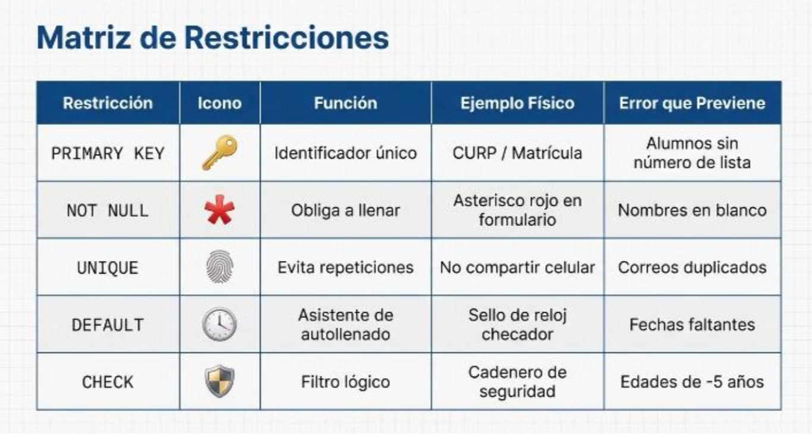

Restricciones en SQL
Las restricciones son reglas que se aplican a las columnas de una tabla para garantizar la integridad de los datos. Ayudan a evitar errores comunes como duplicados, valores vacíos o inconsistencias lógicas.
| Restricción | Icono | Función | Ejemplo físico | Error que previene |
|---|---|---|---|---|
| PRIMARY KEY | 🔑 | Identificador único | CURP / Matrícula | Alumnos sin número de lista |
| NOT NULL | ❗ | Obliga a llenar | Asterisco rojo en formulario | Nombres en blanco |
| UNIQUE | 🌀 | Evita repeticiones | No compartir celular | Correos duplicados |
| DEFAULT | 🕒 | Asistente de autollenado | Sello de reloj checador | Fechas faltantes |
| CHECK | 🛡️ | Filtro lógico | Cadenero de seguridad | Edades inválidas |
Explicación adicional
- PRIMARY KEY: Define una columna como identificador único. No puede repetirse ni estar vacía.
- NOT NULL: Obliga a que el campo tenga un valor, evitando registros incompletos.
- UNIQUE: Garantiza que los valores en una columna no se repitan.
- DEFAULT: Asigna un valor por defecto cuando no se especifica otro.
- CHECK: Verifica que los datos cumplan una condición lógica (por ejemplo, edad > 0).
Importancia
Las restricciones aseguran que los datos sean válidos, coherentes y confiables. Son esenciales para mantener la calidad de la información en cualquier base de datos.
